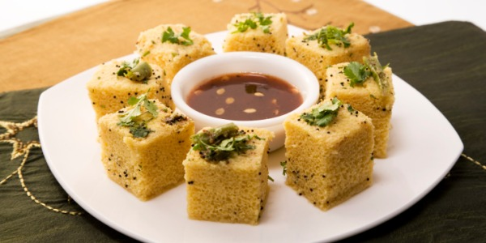
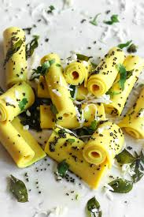
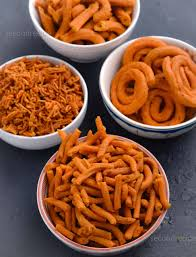
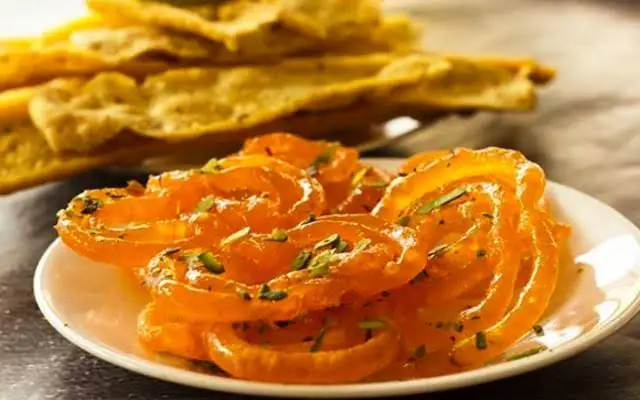

Dhokla is a popular, nutritious, and savory steamed cake originating from the Indian state of Gujarat, often enjoyed as a light breakfast, tea-time snack, or a side dish. Made traditionally from a fermented batter of rice and split chickpeas (chana dal), it is known for its light, spongy, and fluffy texture.

Khandvi, also known as patuli, dahivadi, or suralichi vadi (in Marathi), is a beloved savory snack originating from Gujarati cuisine, widely enjoyed across India. These bite-sized, bright yellow rolls are made from a smooth, cooked batter of gram flour (besan) and yogurt, seasoned with ginger paste, turmeric, and green chili peppers.

Gathiya is a popular Gujarati farsan (savory snack) made from gram flour (besan) that is widely loved for its crunchy, light, and addictive texture. Originating from Gujarat, India—with a particular specialty hailing from Bhavnagar—this golden-yellow snack is created by forcing a spiced, stiff dough through a sieve directly into hot oil, where it is deep-fried until crisp.

Fafda and Jalebi is an iconic Gujarati breakfast combination that perfectly blends savory and sweet flavors, making it a beloved staple in Western India. Fafda, a crispy and yellowish fried snack made from gram flour (besan), carom seeds, and black pepper, provides a light, savory crunch, while the syrupy, fermented batter-based Jalebi offers a soft, sticky, and sugary contrast. Traditionally served with raw papaya sambharo (spicy shredded salad), fried green chilies, and chutney, this duo is particularly famous during festivals like Dussehra.

Thepla is a popular, soft, and thin Gujarati flatbread that serves as a staple in Western Indian cuisine, renowned for its incredible versatility and long shelf life. Made primarily from whole wheat flour, gram flour (besan), and savory spices like turmeric and red chilli powder, the most famous variation is methi thepla, which incorporates fresh, chopped fenugreek leaves.